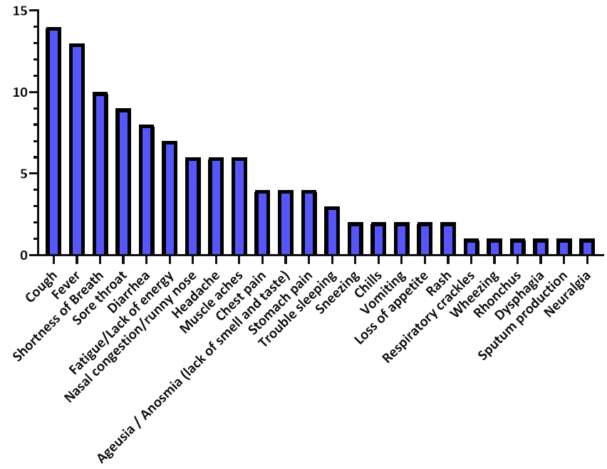
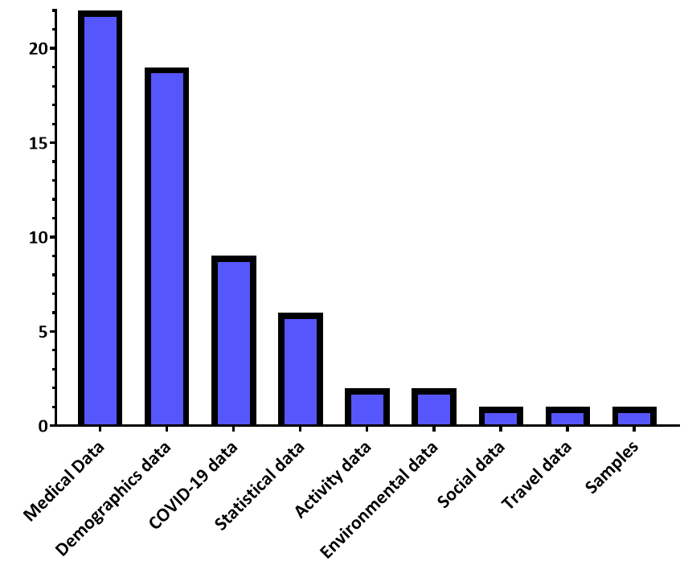

<!DOCTYPE html>
<html>

<head>
    <meta charset="utf-8" />
    <title>Computer Engineering Role in COVID-19 Pandemic</title>
    <meta name="discription" content="Artificial Intelligence" />
    <meta name="AH" content="0" />

</head>

<body>
    <h1>Data Used in COVID-19 Solutions</h1>


    <hr>

    <p>4.1.2. Data Used in COVID-19 Solutions
        Many solutions have been designed to control the COVID-19 pandemic, including
        diagnosis, forecasting, and decision-making solutions. These solutions use many types
        of data, shown in Figure 3, which we will introduce in this section based on the survey
        conducted in Section 2.
        Demographic data is useful in understanding the main characteristics of the population and can be used to
        classify study samples into several categories, such as males and
        females, to simplify the study of the sample. Social data is also used by solutions that study
        the impact of the repercussions of the COVID-19 pandemic on the human psychological
        state. Moreover, there are researchers who have been interested in investigating the possibility of benefiting
        from activity data and other indicators collected via smartwatches and
        wearables. Travel data is used to identify suspected COVID-19 cases that have come from
        countries where the pandemic has spread. Table 5 shows examples of each type of data
        discussed in this paragraph.</p>

    <p>Medical data is widely used in studies directed to control COVID-19, through which
        it is possible to determine the features of the disease that help in its diagnosis as well as
        prediction of its occurrence. Additional data on COVID-19 is also used, which helps to
        know the number, status of cases, and the results of the PCR COVID-19 test. Another
        type of data relies on sampling to detect virus incubators and contaminated places. Also,
        statistical data is used for resource management and risk prediction purposes, such as
        full utilization of ICU capacity, to devise proactive solutions. Finally, the environmental
        data, which some studies have been interested in, assesses the risks of the spread of the
        pandemic and determines the areas in which the population will be more vulnerable to
        infection. Table 6 shows examples of each type of data discussed in this paragraph.</p>

    
    <hr>
    
    <hr>


</body>

</html>